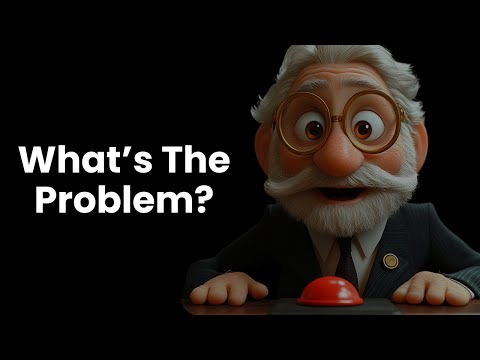
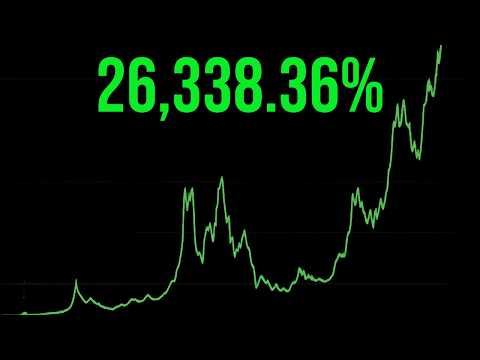

Eine interaktive Präsentation in acht Kapiteln
Die Orange
Pille
Du kannst sehr wohl mit Geld umgehen.
Dein Geld ist das Problem.
Warum das System still und leise die Ersparnisse normaler Menschen aufzehrt, und warum eine führungslose Open-Source-Erfindung aus dem Jahr 2009 eines der wichtigsten Werkzeuge für menschliche Freiheit unserer Zeit sein könnte.
Kapitel eins
Das große Leck
Etwas ist kaputt. Und es liegt nicht an dir.
Kommt dir das bekannt vor?
Du arbeitest härter als je zuvor.
Warum kannst du dir weniger leisten?
Du verdienst mehr als deine Eltern in deinem Alter, kannst dir aber weniger von dem leisten, was sie hatten.
Ein Eigenheim kostete früher etwa 3,5 Jahre Einkommen eines typischen Haushalts. Heute sind es über 5 Jahre.
Sparen auf der Bank fühlt sich sinnlos an. Investieren fühlt sich an wie Glücksspiel. Du machst es trotzdem.
Derselbe Wocheneinkauf kostet jedes Jahr mehr, und niemand hat je dafür gestimmt.
Es liegt nicht an dir. Es liegt am Geld.
US-Medianpreis für Neubauten ÷ Median-Haushaltseinkommen, 1984 vs 2024 (US Census Bureau)
Die beste Analogie für Inflation
Deine Ersparnisse sind ein Eiswürfel in der Sonne.
Du siehst ihn nicht von Tag zu Tag schmelzen, aber er schmilzt. Inflation nimmt dir dein Geld nicht weg. Sie sorgt dafür, dass jede Einheit weniger kauft, leise, jedes Jahr.
In 20 Jahren kaufen deine $10,000 nur noch so viel wie
$5,428
heute. Still und leise verloren: 46%
Kaufkraft eines US-Dollars
Ein Dollar von 1913 ist heute 3 Cent wert.
Die Federal Reserve wurde 1913 gegründet, im selben Jahr, in dem dieses Diagramm beginnt. Seitdem hat der Dollar ~97 % seiner Kaufkraft verloren.
Quelle: US Bureau of Labor Statistics, CPI-U-Jahresdurchschnitte
Woher kommt Inflation?
Sie haben nicht mehr Wert geschaffen. Sie haben mehr Dollar geschaffen.
(Geldmenge M2, von 0,3 auf ~21,5 Billionen $)
(Februar 2020 bis Dezember 2021)
Die reale Wirtschaft wuchs um etwa 3 % pro Jahr. Die Geldmenge um etwa 7 % pro Jahr. In den Preisen zeigt sich diese Lücke.
US-Geldmenge M2 in Billionen Dollar, jeweils Januar (ca.). Quelle: Federal Reserve, FRED M2SL
Ein Gedankenexperiment
Stell dir eine Runde Monopoly vor…
…in der ein Spieler zugleich die Bank ist
und neues Geld drucken darf, wann immer er will.
Er nimmt dir nie einen einzigen Schein weg. Er legt einfach immer mehr auf seinen eigenen Stapel, und jeder Schein, den du hast, kauft etwas weniger Grundstück als zuvor.
Wer gewinnt dieses Spiel? Genau dieses Spiel spielen wir alle.
Der Cantillon-Effekt
Neues Geld wird nicht gleich verteilt. Es fließt bergab.
Wer der Druckerpresse am nächsten ist, gibt das neue Geld aus, solange die Preise noch niedrig sind. Bis es bei Arbeitnehmern und Sparern ankommt, sind die Preise längst gestiegen.
Der Ökonom Richard Cantillon beschrieb das in den 1730er-Jahren. Das Ergebnis ist eine versteckte Umverteilung: von Sparern zu Schuldnern, von Lohnempfängern zu Vermögensbesitzern, von Arm zu Reich.
15. August 1971
Der Tag, an dem das Geld seinen Anker verlor.
Präsident Nixon setzte die Umtauschbarkeit des Dollars in Gold „vorübergehend“ aus. Diese vorübergehende Maßnahme gilt bis heute. Seitdem ist Geld durch nichts als Versprechen gedeckt, und die Zahlen begannen auseinanderzudriften.
Das Laufband
Als Sparen nicht mehr funktionierte, wurden alle zum Spekulieren gezwungen.
Deine Großeltern konnten Geld zur Bank bringen und erwarten, dass es seinen Wert behält. Du musst zum Teilzeit-Fondsmanager werden, nur um nicht zurückzufallen: wie auf einem Laufband, das jedes Jahr schneller wird.
Häuser wurden zu Sparkonten
Menschen kaufen Immobilien, um Vermögen zu schützen, nicht nur zum Wohnen. Diese zusätzliche Nachfrage drängt junge Familien aus genau dem heraus, was sie am dringendsten brauchen.
Aktien wurden zu Inflationsschutzräumen
Ein Teil des „Wachstums“ der Aktienkurse ist einfach der schrumpfende Maßstab. Ökonomen nennen diesen Aufschlag die monetäre Prämie.
Wer kein Vermögen hat, fällt zurück
Wenn du zur Miete wohnst und in bar sparst, arbeitet das System gegen dich. Wenn du schon Vermögen hast, arbeitet es für dich. Die Lücke wächst jedes Jahr.
Die Bank
Dein Geld ist nicht in der Bank.
Wenn du 1.000 $ einzahlst, verleiht die Bank den Großteil davon. Was du hast, ist ein Schuldschein: das Versprechen, dass das Geld da ist, solange nicht zu viele Leute gleichzeitig danach fragen.
Das globale Bild
Und das ist die gute Version.
Wenn du in den USA oder Europa lebst, hast du einige der besten Fiat-Währungen der Welt. Der größte Teil der Menschheit nicht.
Inflation im Jahr 2018. Familien sahen die Ersparnisse eines ganzen Lebens innerhalb von Monaten verschwinden.
auf einem Geldschein aus dem Jahr 2009. Er reichte nicht für ein Busticket.
Wertverlust des Pfunds seit 2019. Banken sperrten die Menschen von ihren eigenen Einlagen aus.
Inflation im Jahr 2023, nach Jahrzehnten wiederholter Währungskrisen.
Wertverlust der Lira gegenüber dem Dollar in nur einem Jahrzehnt.
Erwachsene haben überhaupt kein Bankkonto (Weltbank). Mehr als die Hälfte der Welt lebt unter autoritären Regimen (Human Rights Foundation).
Kapitel zwei
Was Geld wirklich ist
Bevor wir das Geld reparieren können, müssen wir verstehen, wofür es da ist.
Geld = gespeicherte Zeit
Geld ist eine Batterie für deine Lebensenergie.
Du tauschst Stunden deines Lebens gegen Geld. Geld speichert diese Stunden, damit du sie später nutzen kannst: nächste Woche oder in dreißig Jahren, wenn du in Rente gehst.
Gutes Geld ist eine Batterie, die ihre Ladung hält. Heutiges Geld ist eine Batterie, die ausläuft, und zwar absichtlich. Jedes verlorene Prozent ist ein Stück deines Lebens, das du nie zurückbekommst.
40 Stunden deines Lebens…die langsam auslaufen
Der offizielle Plan
Zentralbanken zielen auf 2 % Inflation.
−50%
Klingt wenig. Aber bei 2 % pro Jahr verliert Geld in etwa 35 Jahren die Hälfte seines Werts, ungefähr ein Arbeitsleben. Das ist kein Fehler. Es ist das erklärte Ziel.
Was macht gutes Geld aus?
Geld ist ein Werkzeug. Manche Werkzeuge sind einfach besser.
Knapp
Schwer zu vermehren. Sonst tut es jemand und verwässert deinen Anteil.
Haltbar
Verrottet, rostet und zerbricht nicht mit der Zeit.
Transportabel
Leicht zu tragen und zu senden, über die Straße oder über den Ozean.
Teilbar
Lässt sich in kleine Einheiten für Zahlungen jeder Größe aufteilen.
Überprüfbar
Leicht auf Echtheit zu prüfen, ohne jemandem vertrauen zu müssen.
Austauschbar
Jede Einheit ist gegen jede andere austauschbar.
Zensurresistent
Niemand kann dich daran hindern, es zu sparen oder auszugeben. Im digitalen Zeitalter zählt diese Eigenschaft mehr denn je.
Die wichtigste Eigenschaft ist Knappheit, denn Geld, das leicht zu erschaffen ist, wird auch erschaffen, und die Menschen, die es halten, zahlen den Preis.
Eine Warnung aus der Geschichte
Die Tragödie der Glasperlen.
Jahrhundertelang dienten Glasperlen in Teilen Westafrikas als Geld. Sie waren vor Ort schwer herzustellen, also behielten sie ihren Wert.
Dann kamen europäische Händler mit Schiffen voller Perlen, die in Glashütten billig hergestellt wurden. Damit kauften sie Gold, Elfenbein, Land und schließlich Menschen, und bezahlten mit Geld, dessen Herstellung sie fast nichts kostete.
Wer dein Geld billig herstellen kann, kann deine Lebensarbeit für nichts kaufen.
Heute werden die Glasperlen von Zentralbanken gedruckt.
Warum Gold gewann, und dann verlor
Gold war 5.000 Jahre lang das härteste Geld.
Alles jemals geförderte Gold, etwa 216.000 Tonnen, entspricht rund 60 Jahren heutiger Förderung. Selbst wenn der Goldpreis explodiert, können Minen nur etwa 1,5–2 % pro Jahr hinzufügen. Schwer herzustellen, deshalb behält es seinen Wert.
Doch Gold hat Schwächen: Es ist schwer, teuer zu lagern und schwer zu prüfen. Also gaben die Menschen es den Banken gegen Papierquittungen, und das Papier ersetzte nach und nach das Gold.
- 1933Die US-Verfügung 6102 verbietet Bürgern den Besitz von Gold. Sie müssen es dem Staat für 20,67 $ pro Unze verkaufen. Monate später setzt der Staat den Goldpreis auf 35 $ fest: eine Abwertung des Dollars um 41 %.
- 1944Bretton Woods: Die Währungen der Welt werden an den Dollar gebunden, der Dollar an Gold.
- 1971Die letzte Verbindung zwischen Geld und Gold wird gekappt. Seitdem ist jede Währung der Erde allein durch Versprechen gedeckt.
- 2009Etwas Neues erscheint.
Kapitel drei
Bitcoin betritt die Bühne
Geld mit Regeln, die niemand ändern kann.
3. Januar 2009
Eine Botschaft, versteckt im allerersten Block.
Mitten in der Finanzkrise startete ein anonymer Schöpfer namens Satoshi Nakamoto Bitcoin. In seinem ersten Block steckte eine Zeitungsschlagzeile über Bankenrettungen: ein Zeitstempel und eine Absichtserklärung.
Satoshi zog sich 2011 zurück und kehrte nie zurück. Kein CEO. Kein Unternehmen. Kein Hauptsitz. Niemand, den man verhaften, bestechen oder unter Druck setzen könnte.
- Gemint
- 2009-01-03 18:15:05 UTC
- Belohnung
- 50 BTC
- Vorheriger Block
- 0000000000000000…0000
- Hash
- 000000000019d6689c085ae1…8ce26f
The Times 03/Jan/2009 Chancellor on brink of second bailout for banks
Die wichtigste Zahl
21,000,000
So viele Bitcoin wird es jemals geben. Keine Abstimmung, kein Komitee und kein Notfall kann das ändern. Etwa alle vier Jahre halbiert sich die Ausgabe neuer Bitcoin (das Halving). Der letzte Bruchteil wird um das Jahr 2140 gemint.
Bisher gemint (Live-Schätzung)
20,000,000
95.2% aller Bitcoin, die es je geben wird · Block ≈ 900,000
Der Durchbruch, den die meisten übersehen
Das erste Geld, bei dem Nachfrage kein zusätzliches Angebot schaffen kann.
Gold
Preis ↑Mehr FörderungAngebot ↑
Immobilien
Preis ↑Mehr NeubauAngebot ↑
Dollar
KriseMehr DruckenAngebot ↑
Bitcoin
Preis ↑Mehr Miner steigen einDas Rätsel wird schwererAngebot unverändert
Alle 2.016 Blöcke (etwa zwei Wochen) passt Bitcoin die Mining-Schwierigkeit automatisch so an, dass ungefähr alle 10 Minuten ein neuer Block entsteht, egal wie viele Maschinen dazukommen. Zum ersten Mal in der Geschichte ist das Geldangebot völlig immun gegen Nachfrage.
Wie es funktioniert, ohne Fachchinesisch
Stell dir ein öffentliches Notizbuch vor, das niemandem gehört.
Ein gemeinsames Notizbuch
Jede Bitcoin-Transaktion, die es je gab, steht in einem einzigen Kassenbuch. Zehntausende Computer („Nodes“) weltweit halten identische Kopien. Jeder kann eine Kopie führen.
Eine Lotterie um die nächste Seite
Etwa alle 10 Minuten wetteifern „Miner“ darum, die nächste Seite (einen Block) hinzuzufügen, indem sie ein Rätsel lösen, das sehr schwer zu lösen, aber sofort zu prüfen ist. Der Gewinner erhält neue Bitcoin plus Gebühren.
Regeln, die alle prüfen
Jede Node prüft jede Seite unabhängig anhand der Regeln. Versuch, Coins doppelt auszugeben oder aus dem Nichts zu erschaffen, und das Netzwerk ignoriert dich einfach. Ohne Erlaubnis, ohne Ausnahmen.
Mining verwandelt reale Energie in Sicherheit, ähnlich wie das Graben nach Gold. Die Kosten lassen sich nicht fälschen, also lässt sich das Kassenbuch nicht billig umschreiben.
Probier es selbst
Sei für zehn Sekunden Miner.
Miner verwirbeln die Blockdaten immer wieder mit einer „Nonce“ (einer Zahl, die sie ständig ändern), bis der entstehende Fingerabdruck (ein SHA-256-Hash) mit genügend Nullen beginnt. Es gibt keine Abkürzung: nur Raten, millionenfach.
Schwer zu finden, sofort zu prüfen. Ändere einen einzigen Buchstaben, und der Fingerabdruck ändert sich komplett. Deshalb lässt sich die Geschichte nicht heimlich bearbeiten.
–Drück auf Start. Dein Browser rät, bis er einen gültigen Hash findet.
Vereinfacht: Das echte Bitcoin hasht einen 80-Byte-Blockheader doppelt, und das Netzwerk als Ganzes rät etwa eine Trilliarde Mal pro Sekunde.
Digitale Knappheit
Das erste digitale Ding, das sich nicht kopieren lässt.
Fotos, Songs, Dateien: Alles Digitale lässt sich kostenlos und endlos kopieren. Deshalb brauchte digitales Geld immer eine Bank in der Mitte, die verhindert, dass du denselben Dollar zweimal ausgibst.
Bitcoin hat dieses „Double-Spending-Problem“ ohne jeden Mittelsmann gelöst. Das ist die Erfindung. Was die E-Mail für Briefe getan hat, tut Bitcoin für Werte: Sie bewegen sich in Minuten über den Planeten, zu jeder Stunde, ohne irgendjemandes Zustimmung.
Du brauchst keinen ganzen
1 BTC = 100.000.000 Sats
Bitcoin ist in „Satoshis“ teilbar, wie ein Euro in Cent, nur mit viel mehr Spielraum. Du kannst mit ein paar Euro anfangen.
Bitcoin Pizza Day · 22. Mai 2010
Laszlo Hanyecz zahlte 10.000 BTC für zwei Pizzen, der erste bekannte reale Kauf mit Bitcoin. Jede neue Form von Geld sieht anfangs wertlos aus.
Kapitel vier
Echtes Eigentum
Sicherheit, Selbstverwahrung und Geld, das sich nicht stoppen lässt.
Selbstverwahrung
Deine ganze Bank, in 12 Wörtern.
Eine Bitcoin-Wallet wird durch eine Seed-Phrase kontrolliert: 12 oder 24 gewöhnliche Wörter. Wer die Wörter kennt, kontrolliert die Bitcoin. Sonst niemand, niemals.
Schreib sie auf Papier, stanz sie in Stahl oder lerne sie auswendig, und du kannst deine Lebensersparnisse im Kopf über jede Grenze tragen. Kein Vermögenswert in der Geschichte war je so transportabel.
⚠ Nur zur Veranschaulichung. Verwende nie eine Phrase, die auf einer Website angezeigt wird, und tippe deine echte niemals auf einer Website ein.
Die goldene Regel
Nicht deine Schlüssel, nicht deine Coins.
Lässt du Bitcoin auf einer Börse liegen, besitzt du keine Bitcoin. Du besitzt einen Schuldschein, genau wie bei einer Bankeinlage, mit denselben Risiken.
Bitcoin selbst hat nie versagt. Die Mittelsmänner schon, wieder einmal.
Sicherheit
Das leistungsstärkste Computernetzwerk, das je gebaut wurde.
Um die Geschichte von Bitcoin umzuschreiben, müsstest du die gesamte Mining-Industrie des Planeten an Rechenleistung übertreffen, Milliarden für Hardware und Energie ausgeben und dabei von allen beobachtet werden. Es ist, als wolltest du heimlich ein Buch umschreiben, von dem Zehntausende Fremde identische Kopien besitzen, während es alle zehn Minuten eine neue Seite bekommt.
Nicht vertrauen. Überprüfen.
Trennung von Geld und Staat.
Heute: Vertrau mir
- Vertrau der Zentralbank, dass sie nicht zu viel druckt
- Vertrau deiner Bank, dass sie nicht zu viel verleiht
- Vertrau den Prüfern, den Aufsichtsbehörden, den Politikern
- Vertrau darauf, dass sich die Regeln morgen nicht ändern
Bitcoin: Überprüf es
- Jeder kann eine Node auf einem billigen Computer betreiben
- Prüf selbst jeden je erzeugten Coin und jede Regel
- Die Regeln setzen die Nutzer durch, nicht die Herrschenden
- Sie zu ändern erfordert nahezu einstimmige Einigkeit
Wir haben Kirche und Staat getrennt, damit keine Regierung vorschreiben kann, was du glaubst. Bitcoin trennt Geld und Staat, damit keine Regierung still und leise entwerten kann, was du verdient hast.
Geld der Freiheit
Geld, das sich nicht stoppen lässt.
Bitcoin ist egal, wer du bist, wo du geboren wurdest oder wen du gewählt hast. Für Milliarden Menschen ist das keine Philosophie. Es ist Überleben.
Die Unternehmerin Roya Mahboob bezahlte Frauen und Mädchen in Bitcoin, als sie kein eigenes Bankkonto führen durften, und das Geld gehörte wirklich ihnen.
Als Banken die Konten einer Koalition einfroren, die die #EndSARS-Proteste gegen Polizeigewalt unterstützte, stieg sie auf Bitcoin-Spenden um und machte weiter.
In den ersten Wochen der Invasion kamen über 100 Millionen $ an Krypto-Spenden aus aller Welt an, innerhalb von Stunden statt Wochen.
Familien schützten ihre Ersparnisse vor der Hyperinflation, und Geflüchtete flohen mit ihrem Vermögen, auswendig gelernt als zwölf Wörter.
Kapitel fünf
Bargeld, Gold, Häuser, Aktien und Bitcoin
Ein ehrlicher Vergleich, wo Menschen ihre Lebensarbeit aufbewahren.
Die Bewertung
Wo solltest du deine Zeit aufbewahren?
Härter als Gold
Schon jetzt knapper als Gold, und es wird immer knapper.
Seit dem Halving 2024 wächst das Bitcoin-Angebot langsamer als das von Gold. 2028 halbiert es sich erneut, und wieder, bis das neue Angebot null erreicht.
Gold: Knappheit, der du vertrauen musst. Bitcoin: Knappheit, die jeder überprüfen kann, mit der Geschwindigkeit des Internets.
Neues Angebot pro Jahr. USD: durchschnittliches M2-Wachstum seit 1960. Gold: Schätzungen des World Gold Council. Bitcoin: Protokollplan.
Kapitel sechs
Die souveräne Denkweise
Repariere das Geld, repariere die Welt.
Zeitpräferenz
Wenn Geld seinen Wert behält, kannst du in Jahrzehnten denken.
Schmelzendes Geld lehrt
- Gib es jetzt aus, morgen ist es weniger wert
- Mach Schulden, die Inflation frisst sie auf
- Jag Renditen nach, nur um nicht zurückzufallen
- Kurzfristiges Denken, überall
Solides Geld lehrt
- Sparen wird belohnt, nicht bestraft
- Kauf weniger, aber bessere Dinge, die halten
- Investiere nur in das, was es wirklich wert ist
- Plane für die Kinder deiner Kinder
Ökonomen nennen das Zeitpräferenz: wie sehr du die Zukunft im Vergleich zur Gegenwart schätzt. Menschen mit niedriger Zeitpräferenz pflanzten Obstgärten und bauten Kathedralen, deren Vollendung sie nie erleben würden. Gutes Geld macht Geduld wieder vernünftig.
Der Deflationsmythos
Preise sollten eigentlich fallen.
Technologie macht fast alles billiger in der Herstellung: Rechenleistung, Fernseher, Solarmodule, Kommunikation. In einer Welt mit ehrlichem Geld erreichen dich diese Fortschritte als niedrigere Preise.
In unserer werden sie durch neues Geld weginflationiert, bevor du sie je siehst. Fallende Preise durch Fortschritt sind keine Krise. Sie sind die Produktivität der Menschheit, endlich mit allen geteilt.
„Aber dann gibt ja niemand mehr Geld aus!“
Fernseher und Handys werden jedes Jahr billiger und besser, und die Leute kaufen sie trotzdem. Du kaufst, was du brauchst, wenn du es brauchst. Du kaufst nur keinen Ramsch mehr, den du nicht brauchst.
Zum Weiterlesen
Jeff Booths The Price of Tomorrow erklärt, warum Technologie deflationär ist und warum unser Geldsystem dagegen ankämpft.
Wohnungen zum Wohnen
Lasst Häuser wieder ein Zuhause sein.
Wenn Geld schmilzt, parken Menschen ihre Ersparnisse in Immobilien. Diese zusätzliche Nachfrage treibt die Preise über das hinaus, was junge Familien zahlen können. So mietet eine ganze Generation, während Wohnungen als Sparkonten dienen.
Bitcoin gibt Ersparnissen einen anderen Ort zum Wohnen: knapp, tragbar und ganz ohne Dach. Jeder Sparer, der sich dafür entscheidet, ist ein Bieter weniger gegen jemanden, der sein erstes Zuhause kauft.
Rettungsboote als Abstellraum
Häuser zum Aufbewahren von Vermögen zu nutzen ist, als würde man Rettungsboote als Abstellraum verwenden. Es funktioniert für die Besitzer, bis jemand einen Platz braucht.
Energie
Mining läuft mit Energie, die sonst niemand will.
Bitcoin-Miner können sich überall einstecken und in Sekunden abschalten. Das macht sie zu einem einzigartigen Kunden: Sie kaufen Strom, der sonst verschwendet würde, und treten zur Seite, wenn Menschen ihn brauchen.
Abgefackeltes Gas
Ölfelder verbrennen Methan, ein starkes Treibhausgas. Miner machen stattdessen Strom daraus, senken so die Emissionen und bezahlen auch noch dafür.
Ungenutzter Wind und Sonne
Neue Wind- und Solarparks erzeugen oft mehr Strom, als das Netz aufnehmen kann. Miner kaufen den Überschuss und helfen neuen Projekten, sich zu rechnen (Cornell, 2023).
Ein flexibles Netz
Kommt eine Hitzewelle oder ein Sturm, schalten Miner sich innerhalb von Sekunden ab und geben den Strom an Haushalte und Krankenhäuser zurück.
Denk an einen Schwamm: Er saugt Energie auf, die sonst überlaufen und verloren gehen würde, und gibt sie frei, sobald Menschen sie brauchen. 52,4 % des Minings laufen bereits mit nachhaltiger Energie (Cambridge, 2025).
Neutrales Geld
Kein CEO. Keine Werbung. Keine Lieblinge.
Hinter Bitcoin steht keine Firma. Es verkauft deine Daten nicht, zeigt dir keine Werbung, kassiert nicht an deinen Zahlungen mit und rettet niemanden. Big Tech, Großbanken und die größten Konzerne spielen nach genau denselben Regeln wie ein Student mit einem Handy.
Niemandes Quartalsgewinn
Bitcoin zu halten finanziert keinen Tech-Giganten, keine Bankbilanz und keine Dividende für Aktionäre. Es ist kein Anteil an irgendeinem Unternehmen.
Dieselben Regeln für alle
Ein Milliardär kann nicht mehr drucken, keine bessere Version kaufen und die Regeln nicht für sich ändern.
Wie eine Sprache
Wie Mathematik oder eine Sprache gehört es niemandem, und jeder kann es nutzen. Genau das macht es fair.
Eine friedliche Revolution
Geld, das sich nicht für Kriege drucken lässt.
Seit Jahrhunderten werden Kriege bezahlt, indem man Geld druckt oder verwässert, von römischen Münzen mit billigem Metall bis zum Papiergeld des 20. Jahrhunderts. Über diese Steuer stimmt niemand ab. Sie kommt leise, als steigende Preise.
Mit Geld, das sich nicht drucken lässt, müssen Regierungen alles offen bezahlen, mit Steuern, die die Menschen sehen und diskutieren können. Solides Geld zwingt die Macht zur Rechenschaft.
Die Küchentisch-Regel
Eine Familie, die nur ausgeben kann, was sie verdient, muss jede große Entscheidung besprechen. Solides Geld bringt Staaten zurück an den Küchentisch.
Ohne Barrikaden
Bitcoin verändert das System ohne Proteste, ohne Gewalt und ohne Erlaubnis. Menschen wählen einfach besseres Geld, einer nach dem anderen.
Der Mensch zuerst
Für dich, deine Familie und dein Unternehmen.
Ersparnisse, die nicht schmelzen
Verwahre sie selbst, rund um die Uhr verfügbar, ohne Erlaubnis, ohne Banköffnungszeiten und ohne Mindestguthaben.
Vermögen, das eine Generation überdauert
Spare für deine Kinder in Geld, das seinen Wert behält, und plane ein Erbe, das kein eingefrorenes Konto und kein Mittelsmann blockieren kann.
Bezahlt von überall
Nimm in Minuten Zahlungen aus aller Welt an, ohne Rückbuchungen und ohne Zahlungsdienstleister, der dich sperren kann. Halte Reserven, die die Inflation nicht auffrisst.
Es ist der Unterschied zwischen Geld, das du von einer Bank mietest, und Geld, das dir gehört.
Vom Kunden zum Eigentümer
Der Wandel passiert zuerst in deinem Kopf.
- Um Erlaubnis bitten→Ohne Erlaubnis
- Institutionen vertrauen→Selbst überprüfen
- Dein Vermögen von einer Bank mieten→Deine eigenen Schlüssel halten
- Regeln, die sich per Dekret ändern→Regeln in offenem Code
- Heute ausgeben, morgen sorgen→Sparen, aufbauen und für Generationen planen
- Abhängig→Souverän
Kapitel sieben
Ehrliche Fragen
Skepsis ist gesund. Hier sind klare Antworten.
Die häufigsten Einwände
„Ja, aber…“
Ist es nicht viel zu volatil?
Ja, heute schon. Ein neuer monetärer Vermögenswert wächst von null auf globale Größe, und der Preis schwankt auf dem Weg. Volatilität ist der Preis dafür, früh dabei zu sein, und sie nimmt tendenziell ab, je weiter die Verbreitung wächst. Stand 2025 endete jeder Vierjahreszeitraum in der Geschichte von Bitcoin höher, als er begann, aber vergangene Wertentwicklung garantiert nichts. Halte nur einen Betrag, den du vier Jahre oder länger unberührt lassen könntest.
Nutzen das nicht vor allem Kriminelle?
Größtenteils nicht. Chainalysis schätzt illegale Aktivitäten auf unter 1 % des Krypto-Transaktionsvolumens, während die UN schätzt, dass jedes Jahr 2–5 % des weltweiten BIP gewaschen werden, überwiegend in Dollar und Euro. Und ein öffentliches Kassenbuch, das jede Transaktion für immer festhält, ist ein schrecklicher Ort, um Verbrechen zu verstecken.
Verschwendet es nicht Energie?
Energie ist das, was das Kassenbuch unfälschbar macht. Ob das „Verschwendung“ ist, hängt davon ab, ob du ehrliches Geld für schützenswert hältst. Über die Hälfte des Minings läuft bereits mit nachhaltigen Quellen (Cambridge, 2025). Miner können sich überall ansiedeln, also kaufen sie gestrandete und überschüssige Energie, die sonst verloren ginge, helfen neue Wind- und Solarprojekte zu finanzieren (Cornell, 2023) und Stromnetze zu stabilisieren.
Können Regierungen es nicht einfach verbieten?
China verbot das Mining 2021, und die Rechenleistung des Netzwerks erreichte innerhalb von etwa einem Jahr neue Rekorde. Bitcoin ist nur Information: Mathematik kann man nicht verbieten. Inzwischen haben die USA 2024 Spot-Bitcoin-ETFs genehmigt und 2025 eine strategische Bitcoin-Reserve geschaffen.
Kann nicht jemand ein besseres bauen?
Du kannst den Code kopieren, nicht das Netzwerk. Tausende haben es versucht. Fast alle haben einen Gründer, eine Firma, Insider, die zuerst Coins bekamen, oder ein Team, das die Regeln ändern kann. Bitcoins fairer Start, sein verschwundener Schöpfer, 17 Jahre Erfolgsbilanz und unerreichte Sicherheit lassen sich nicht kopieren, so wie dir das Kopieren des Wikipedia-Codes keine Wikipedia geben würde.
Habe ich es nicht schon verpasst?
Das sagten die Leute bei 1 $, 100 $, 1.000 $ und 10.000 $. Bitcoin wurde über 400 Mal für „tot“ erklärt. Sein Gesamtwert ist immer noch ein Bruchteil dessen von Gold, und nur ein kleiner Teil der Menschheit hält es in Selbstverwahrung. Das heute zu fragen ist, als hätte man 1999 gefragt, ob man das Internet verpasst hat.
Ist das nicht ein Schneeballsystem?
Ein Schneeballsystem braucht einen Initiator, der Renditen verspricht und frühere Anleger mit dem Geld neuer Anleger bezahlt. Bitcoin hat keinen Initiator, keinen Emittenten, keine versprochene Rendite, und niemand bezahlt irgendwen. Es ist Open-Source-Software, und jeder Coin ist für jeden überprüfbar.
Was, wenn ich meine Schlüssel verliere?
Dann kann sie niemand für dich wiederherstellen. Das ist der Preis echten Eigentums. Fang klein an, übe die Wiederherstellung einer Wallet aus ihrer Seed-Phrase, bewahre Backups an getrennten sicheren Orten auf und plane, wie deine Familie erben würde. Multisignatur-Setups beseitigen jeden einzelnen Schwachpunkt.
Knacken Quantencomputer es nicht?
Heutige Quantencomputer sind weit davon entfernt, eine Bedrohung zu sein. Wenn sie es werden, stehen Banken, Regierungen und das gesamte Internet vor derselben Herausforderung. Auch Bitcoin kann sich weiterentwickeln: Vorschläge für quantenresistente Signaturen werden bereits offen entwickelt.
Ist das nicht zu kompliziert für mich?
Du musst nicht verstehen, wie Mailserver funktionieren, um eine E-Mail zu schicken. Moderne Wallets sind so einfach wie eine Banking-App. Fang mit ein paar Euro an, übe Senden und Empfangen und lerne die tieferen Teile mit der Zeit. Das Schwierigste ist nicht die Technik. Es ist, das zu verlernen, was man uns über Geld beigebracht hat.
Kapitel acht
Deine ersten Schritte
Erst Neugier. Dann Sats. Immer Schlüssel.
Ein einfacher Weg
Lernen, klein anfangen, eigene Schlüssel halten.
Erst lernen
Nimm dir Stunden, nicht Minuten. Lies, hör zu, stell Fragen. Verständnis ist das, was dich durch die Volatilität trägt.
Klein anfangen
Kauf für ein paar Euro Sats bei einem seriösen, regulierten Anbieter. Viele kaufen regelmäßig einen kleinen festen Betrag, statt den richtigen Moment erraten zu wollen.
Selbst verwahren
Zieh sie auf eine Wallet ab, die du kontrollierst. Für größere Beträge nutze eine Hardware-Wallet, die deine Schlüssel offline hält.
Den Seed schützen
Schreib ihn auf Papier oder Stahl. Fotografiere ihn nie, speichere ihn nie in der Cloud, tippe ihn nie auf einer Website ein. Niemand Seriöses wird je danach fragen.
Überprüfen
Wenn du so weit bist, betreibe deine eigene Node. Dann musst du niemandem mehr etwas glauben.
Weitergeben
Erklär es jemandem, der dir wichtig ist. So hat sich jede orange Pille verbreitet.
Diese Präsentation dient der Bildung und ist keine Finanzberatung. Recherchiere selbst und investiere nie mehr, als du dir leisten kannst zu verlieren.
Tiefer eintauchen · Lesen
Die Bibliothek des Kaninchenbaus.
Das Bitcoin-Whitepaper
Neun Seiten, mit denen alles begann. Überraschend gut lesbar.
Eric Hughes · 1993A Cypherpunk's Manifesto
Warum Privatsphäre im digitalen Zeitalter unverzichtbar ist und warum Menschen sie selbst bauen müssen, in Code.
Timothy C. May · 1988The Crypto Anarchist Manifesto
Eine Vorhersage von 1988: Kryptografie würde verändern, wie Geld, Vertrauen und Macht funktionieren.
The Bitcoin Standard
Die Geschichte des Geldes, von Muscheln über Gold bis Bitcoin.
Broken Money
Wie unser Finanzsystem wirklich funktioniert und warum es normale Menschen im Stich lässt.
The Price of Tomorrow
Warum Technologie deflationär ist und warum das eine gute Nachricht ist.
Check Your Financial Privilege
Bitcoin aus der Sicht von Menschen, die unter autoritären Regimen leben.
Das Netzwerk live ansehen
Sieh zu, wie Blöcke gemint und Transaktionen in Echtzeit bestätigt werden.
Energie · Cornell · 2023From Mining to Mitigation
Begutachtete Studie: Mining kann helfen, neue Wind- und Solarparks zu finanzieren, indem es ihren Strom abnimmt, bevor sie ans Netz gehen.
Energie · Cambridge · 2025Digital Mining Industry Report
52,4 % des Minings laufen bereits mit nachhaltiger Energie, gegenüber 37,6 % im Jahr 2022. Kohle fiel von 36,6 % auf 8,9 %.
Tiefer eintauchen · Sehen und hören
Filme zum Teilen, Stimmen zum Folgen.
Filme · kostenlos auf YouTube (auf Englisch)

Joe Bryan · Hier anfangenWhat's the Problem?Ohne Fachchinesisch: warum so vieles im modernen Leben kaputt wirkt, zurückgeführt auf das Geld. Das beste erste Video zum Teilen.
Art of the ProblemBitcoin: The Trust MachineEine wunderschön animierte Erklärung, wie Bitcoin wirklich funktioniert, von den Grundprinzipien an. Dokumentarfilm · 2024God Bless BitcoinGeld, Moral und Freiheit: wie kaputtes Geld die Gesellschaft prägt und warum Bitcoin Hoffnung gibt.Podcasts, die deine Zeit wert sind
- Coin StoriesNatalie BrunellEinsteigerfreundliche Gespräche über Geld, Inflation und Freiheit.
- Bitcoin AudibleGuy SwannDie besten Bitcoin-Essays, vorgelesen und diskutiert.
- Bitcoin FundamentalsPreston PyshBitcoin aus der Perspektive von Investment und Makroökonomie.
- What Bitcoin DidAusführliche InterviewsDie Menschen, die Politik und die Ideen, die Bitcoin prägen.
- The Bitcoin Standard PodcastSaifedean AmmousÖkonomie, solides Geld und die Geschichte des Geldes.
- Stephan Livera PodcastStephan LiveraTiefe Einblicke in Selbstverwahrung, Lightning und die Technik.
Bei der orangen Pille geht es nicht darum, reich zu werden.
Es geht darum, frei zu werden.
„Das Grundproblem herkömmlicher Währungen ist all das Vertrauen, das nötig ist, damit sie funktionieren.“
Satoshi Nakamoto, 2009
Bleib bescheiden. Stapel Sats. Halte deine Schlüssel.
Musik · “Algorithm Runner” — JoelFazhari · Pixabay